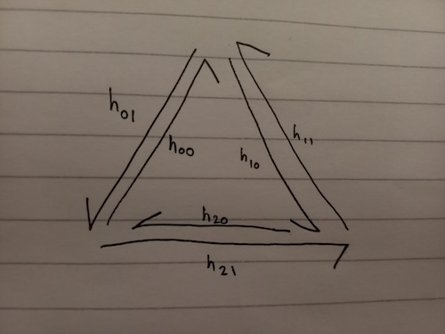

Since Spring time 2023 when I wrote a coursework section on half-edge meshes for the MSc students, I have been thinking about the half-edge data structure quite a lot. It's a very elegant representation, and I was convinced that there's a way to talk about it from the perspective of Group Actions. I have now worked out a way to do this, at least partially. I really hope that this perspective might unlock further discoveries - but I accept the possibility that the connection is superficial and I am just trying to `make everything fit'. You can decide for yourself.
If you are unfamiliar with halfedge meshes, I'm not going to fully explain them here, but this is quite a good explanation and it comes with an interactive demo.
The essential idea is that all we need to know to reconstruct a polyhedron/mesh is the number of edges and how the edges connect to each other (and the positions of the vertices, but we can ignore that if we only care about topology - in the rest of this discussion, I only care about topology). To capture how the edges `connect' to each other, it's convenient to split each edge into two halfedges, which are like two arrows pointing opposite directions along the edge. Each halfedge has an `opposite' halfedge and a `next' halfedge (found by following the arrow).
The advantage of the halfedge mesh as a representation is that it's easy to traverse around the mesh. E.g. to find all halfedges around a face, you start at one halfedge and find the `next' halfedge until you get back to the same halfedge again. Similarly, to find all halfedges around a vertex (the `onering'), you start at one halfedge and just find the `opposite.next' halfedge, until you get back to the same halfedge.
A cool thing I discovered when I was first exploring half-edge meshes, is that if you replace the pointer to the `next' halfedge with the pointer to the `opposite.next' halfedge, for all the halfedges (and keep the `opposite' pointer the same), this immediately gives you the halfedge mesh data structure of the dual mesh!
This was definitely not obvious to me at the time, but hindsight has made it clearer. It's best understood in terms of what I said above about traversing around a vertex and traversing around a face. In a dual mesh, the edge positions stay the same (imagine pivoting them by 90 degrees around their midpoint) but every face gets replaced by a vertex, and every vertex gets replaced by a face. The effect of replacing the `next' pointers by the `opposite.next' pointers is to replace `face-traversal' by `vertex-traversal'. If we did that twice, then the `next' pointer would become the `opposite.opposite.next' pointer, which is just the `next' pointer. So the second time, `vertex-traversal' must turn back into `face-traversal'... This means that our operation both turns faces into vertices, and vertices into faces, so it does everything that the `dual' operation should do.
Coming from a pure maths background, to be honest I am more comfortable talking about groups than I am talking about pointers. (Sorry, but memory addresses still scare me a bit.) For a recap of relevant group theory, watch my one and only educational YouTube video. Please don't laugh at my presentation voice (like my ex-boyfriend did) or find any mistakes (like my PhD supervisor did). You might also want to read up about group actions a bit more formally. Here's the relevant Wikipedia Page.
(From Wikipedia) If \( G \) is a group with identity element \( e \), and \( X \) is a set, then a (left) group action \( \alpha \) of \( G \) on \( X \) is a function \[ \alpha : G \times X \rightarrow X \] such that \[ \begin{matrix} &\alpha (e,x) = x & \text{(identity)} \\ \text{and}& \alpha(g_1, \alpha(g_2,x)) = \alpha(g_1 g_2,x) & \text{(compatibility)}. \end{matrix} \]
I've realised that we can view a halfedge mesh as an action \( \alpha \) of a group \( G \) on a set of halfedges \( H = \{h_{00}, h_{01}, h_{10}, h_{11}, ..., h_{(n-1)0}, h_{(n-1)1} \} \). (The labelling indicates that \( h_{i0} \) and \( h_{i1} \) are paired by the `opposite' relation.) The group \( G \) consists of all combinations of `opposite' and `next' and their inverses, and for any valid halfedge mesh then the opposite of the opposite halfedge is itself, so we can write the group as \( G = \left< \text{opp},\text{nxt} | \text{opp}^2 = e\right> \).
The group \( G \) is the same for any halfedge mesh, and the set H looks the same for any mesh with the same number of elements. The `group action' of G on H is what describes the structure of the mesh. The generators of \( G \) are \(\text{opp} \) and \( \text{nxt} \), so describing the actions of these elements on all elements of \( H \) is sufficient to fully determine the group action \( \alpha \) (and hence, to describe the mesh).
As a simple example, take the `doubled over triangle'. We have \( H = \{ h_{00}, h_{01}, h_{10}, h_{11},h_{20}, h_{21} \} \), and the group action is fully determined by \[ \begin{matrix} \alpha( \text{nxt}, h_{00}) = h_{10} & \alpha( \text{opp}, h_{00} ) = h_{01} \\ \alpha( \text{nxt}, h_{10}) = h_{20} & \alpha( \text{opp}, h_{10} ) = h_{11} \\ \alpha( \text{nxt}, h_{20}) = h_{00} & \alpha( \text{opp}, h_{20} ) = h_{21} \\ \alpha( \text{nxt}, h_{01}) = h_{21} & \alpha( \text{opp}, h_{01} ) = h_{00} \\ \alpha( \text{nxt}, h_{21}) = h_{11} & \alpha( \text{opp}, h_{21} ) = h_{20} \\ \alpha( \text{nxt}, h_{11}) = h_{01} & \alpha( \text{opp}, h_{11} ) = h_{10} \\ \end{matrix}. \]
In the `group action' perspective, the orbits of various subgroups of \( G \) give us insight into what sort of mesh the `group action' is describing.
The following section provides an attempt at an alternative way to look at the `dual halfedge mesh' construction that I showed above.
Suppose we have a set of halfedges \( H = \{h_{00}, h_{01}, h_{10}, h_{11}, ..., h_{(n-1)0}, h_{(n-1)1} \} \), and we know how the group \( G \) acts on \( H \) via the group action \( \alpha \). The group action \( \alpha \) contains all the information to reconstruct a particular halfedge mesh.
A reasonable question to ask is, can other group actions be derived from \( \alpha\)?
Precisely, is there a group action \( \beta : G \times H \rightarrow H \) such that \( \beta(g, h) = \alpha(\phi(g), h) \) for some permutation (relabelling/reindexing) \( \phi \) of the group elements in \( G \)?
Using the compatibility condition on \( \beta(g_1, \beta(g_2,h)) \), we can show that \[ \alpha(\phi(g_1 g_2), h) = \alpha(\phi(g_1)\phi(g_2), h) \] for all \( g_1,g_2 \in G\) and all \( h \in H\).
Also, from the identity condition on \( \beta \) we have \[ \alpha(\phi(e), h) = \beta(e,h) = h \].
So, assuming injectivity of \( \alpha \) on \( G \times H\) (is this valid? why? wait it's only because it's for ALL h?) then \[ \phi(g_1)\phi(g_2)=\phi(g_1 g_2)\text{and}\phi(e)=e. \] So, \( \phi \) must be a group homomorphism.
Furthermore, \( \phi \) was assumed to be a permutation (bijection), so \( \phi \) must be an automorphism.
A group homomorphism is fully determined by its value on the group generators. So, we just need to work out the possibilities for two generators, such as \( \text{opp}\) \quad and \quad \( \text{next}\).
Now \( \phi(\text{opp})^2 = \phi(\text{opp}\circ\text{opp})=\phi(e)=e \), and \( \phi(\text{opp})\neq e\) by injectivity (since \( \phi(e)=e\)). So \( \phi(\text{opp}) \) has order exactly 2. The only element with order exactly 2 in \( G \) is \(\text{opp}\). So, \( \phi(\text{opp})=\text{opp}\).
Now, since \( \phi \) is surjective, then \( \phi(g)=\text{next}\) for some \( g \in G\).
Can I narrow it down to just a few options?